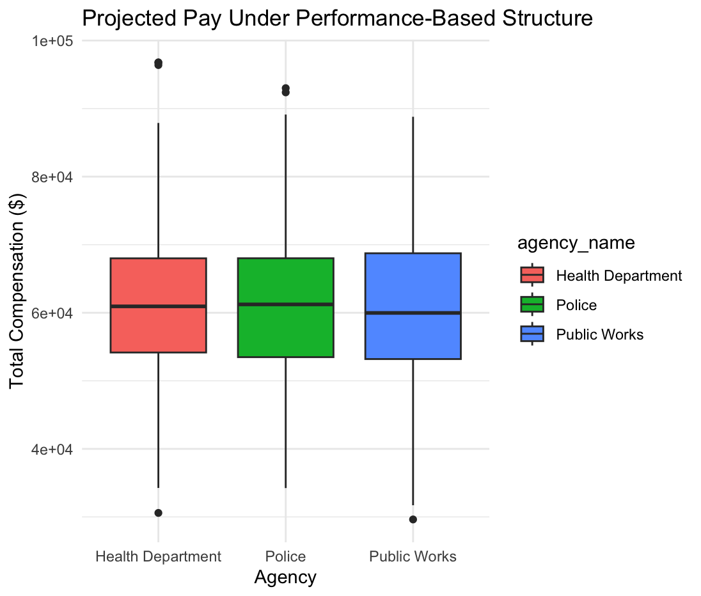

Mini-Project #01: NYC Payroll Analysis
Executive Summary:
The following analysis utilizes the NYC payroll data to examine payroll trends, identify key figures within the dataset, and evaluate three potential policy proposals:
- Capping salaries at the mayoral level.
- Increasing staffing to reduce overtime expenses.
- Implementing a performance-based pay structure.
The goal is to understand potential savings, key individuals, agencies, and trends in the city’s payroll system. Each policy is analyzed in terms of its financial impact, implementation feasibility, and potential issues on workforce moral and performance.
Introduction:
The City of New York spends significant amounts on payroll across various departments, with substantial portions allocated to overtime pay and high-level salaries. In an effort to address growing payroll expenses, three potential policy initiatives have been explored in this report. These policies are intended to reduce costs, increase efficiency, and ensure fairness within the payroll structure, all while maintaining employee motivation and performance.
Data Collection and Preparation:
The dataset used for this analysis derives from the NYC payroll system. This data is collected in batches using the NYC’s open data platform, where:
- File Formate: The data is in CVS format, reperesenting city payroll records, including employee names, positions, salaries and compensations, and other related details.
- Data Processing: Various libraries (e.g., dplyr, jsonlite, httr2, readr, stringr, DT, and scales) are used to clean and process the data.
Key insights drawn from the data include:
- Employee Compensation: Calculations of total compensation for key individuals, including salaries, ovetime pay, and other compensations.
- Aggregated Salaries: Analysis of city-wide payroll figures, employee counts, and overtime statistics.
Key Insights from NYC Payroll Data:
- Top Paid Individual: The highest city total payroll (regular salary + overtime pay) for a single individual is identified.
- Overtime Trends: The individual with the most overtime hours and the agency with the highest overtime usage are highlighted.
- Highest Paying Agencies: The agency with the highest average total payroll per employee is identified.
- Payroll Growth: Over the past 10 years, the city’s aggregate payroll has grown, with the trend showcasing the need for cost control measure.
Policy Proposals:
Policy 1: Capping Salaries at the Mayoral Level
- Objective: To limit compensation of city employees to the mayor’s total pay, as a mean to reduce government spending.
- Analysis:
- The mayor’s salary is calculated by summing his regular pay and overtime for each fiscal year.
- Employees earning above the mayor’s salary are identified, and their salary reductios are computed by deducting the mayor’s salary from their total pay.
- A benchmark of $10 million in savings was administrated to determine whether the proposal would have significant impact.
- Potential Savings: The total savings from implementing this policy is approximately $3.4 billion. Agencies, such as Department of Pedagogical, Fire Department, and Police Department would bear the brunt of the salary caps.
- Recommendation: While the policy could yield total savings exceeding $10 million, it may affect employee morale (e.g., lack of motivation), especially amonst high-level positions. Consideration should be given to alternative savings strategies that target overtime reduction.
Policy 2: Increasing Staffing to Reduce Overtime Expenses
Objectives: To reduce the need for overtime by increasing the number of full-time employees in key agencies.
Analysis:
- Overtime data is analyzed across various agencies, with an estimate of the number of full-time employees needed to replace overtime.
- Cost Comparison: The cost of overtime is compared to the potential cost of hiring full-time employees to replace overtime hours.
- Savings Potential: Agencies with the higher overtime costs could save significant amounts by replacing overtime with regular employees.
Recommendation: This policy has the potential for substantial savings, especial in agencies with significant overtime costs. The financial viability of this approach should be further explored with specific focus on high overtime usage agencies.
Policy 3: Implementing a Performance-Based Pay Structure
Objective: Introduce a performance-based pay structure where employees are rewarded based on their performance, including task completion, complaints received, and response times.
Analysis:
- A sample employee dataset is used to create performance-based pay by introducing bonuses for task completion and penalties for complaints. In this case, a 10% bonus is introduced for exceeding 100 tasks and a 5% reduction penalty is calculated for 3+ complaints. The performance is calculated by taking the difference of the bonus and the penalty.
- The total cost of payroll before and after implementing the performance-based pay structure is compared.
- Potential Savings: By adjusting compensation based on performance, savings are realized in the form of reduced pay for low-performing employees. A total savings of $1.2 million is approximating amongst the Health, the Police, and the Public Works departments.
- Visualization: A boxplot is provided to visualize how compensation would change across agencies under the new pay structure.

- Recommendation: This policy could lead to some cost savings, particularly for underperforming employees. However, careful consideration of performance metrics and employee buy-in is needed to ensure effectiveness and fairness in the system.
Summary of Findings and Recommendations
- Capping Salaries: Potential savings from capping salaries at the mayoral level could be substantial. However, the policy risks significant morale impacts among higher-paid employees. A balance between cost-saving and employee satisfaction should be considered.
- Increasing Staffing: This proposal could reduce overtime-related expenses significantly, especially for agencies with the highest overtime usage. Further analysis is needed on the recruitment and training costs associated with increasing staffing levels.
- Performance-Based Pay: Implementing a performance-based pay structure could encourage higher productivity but requires careful planning to ensure fairness and avoid unintended consequences, such as employee dissatisfaction.
Conclusion:
All three policy proposals offer potential solutions to manage NYC’s growing payroll expenses. However, each comes with its own set of challenges and considerations. A detailed cost-benefit analysis, alongside employee feedback, will be crucial in selecting the most viable strategy. Further testing and pilot programs are recommended before widespread implementation.